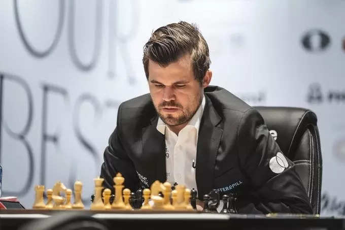

A very short history of chess
The history of chess can be traced back nearly 1500 years to its earliest known predecessor, called
chaturanga, in India; its prehistory is the subject of speculation. From India it spread to Persia.
Following the Arab invasion and conquest of Persia, chess was taken up by the Muslim world and subsequently
spread to Europe via Spain (Al Andalus) and Italy (Emirate of Sicily). The game evolved roughly into its
current form by about 1500 CE. "Romantic chess" was the predominant playing style from the late 18th century
to the 1880s. Chess games of this period emphasized quick, tactical maneuvers rather than long-term
strategic planning. The Romantic era of play was followed by the Scientific, Hypermodern, and New Dynamism
eras. In the second half of the 19th century, modern chess tournament play began, and the first official
World Chess Championship was held in 1886. The 20th century saw great leaps forward in chess theory and the
establishment of the World Chess Federation. In 1997, an IBM supercomputer beat Garry Kasparov, the then
world chess champion, in the famous Deep Blue versus Garry Kasparov match, ushering the game into an era of
computer domination. Since then, computer analysis - which originated in the 1970s with the first programmed
chess games on the market - has contributed to much of the development in chess theory and has become an
important part of preparation in professional human chess. Later developments in the 21st century made the
use of computer analysis far surpassing the ability of any human player accessible to the public. Online
chess, which first appeared in the mid-1990s, also became popular in the 21st century.
Rise of computers and online chess
The Internet enabled online chess as a new medium of playing, with chess servers allowing users to play
other people from different parts of the world in real time. The first such server, known as Internet Chess
Server or ICS, was developed at the University of Utah in 1992. ICS formed the basis for the first
commercial chess server, the Internet Chess Club, which was launched in 1995, and for other early chess
servers such as FICS (Free Internet Chess Server). Since then, many other platforms have appeared, and
online chess began to rival over-the-board chess in popularity. During the 2020 COVID-19 pandemic,
the isolation ensuing from quarantines imposed in many places around the world, combined with the success of
the popular Netflix show The Queen's Gambit and other factors such as the popularity of online tournaments
(notably PogChamps) and chess Twitch streamers, resulted in a surge of popularity not only for online chess,
but for the game of chess in general; this phenomenon has been referred to in the media as the 2020 online
chess boom.
Computer chess has also seen major advances. By the 1990s, chess engines could consistently defeat most
amateurs, and in 1997 Deep Blue defeated World Champion Garry Kasparov in a six-game match, starting an era
of computer dominance at the highest level of chess. In the 2010s, engines of superhuman strength became
accessible for free on a number of PC and mobile platforms, and free engine analysis became a commonplace
feature on internet chess servers. An adverse effect of the easy availability of engine analysis on
hand-held devices and personal computers has been the rise of computer cheating, which has grown to be a
major concern in both over-the-board and online chess. In 2017, AlphaZero - a neural network also capable of
playing shogi and Go - was introduced. Since then, many chess engines based on neural network evaluation
have been written, the best of which have surpassed the traditional "brute-force" engines. AlphaZero also
introduced many novel ideas and ways of playing the game, which affected the style of play at the top level.
As endgame tablebases developed, they began to provide perfect play in endgame positions in which the
game-theoretical outcome was previously unknown, such as positions with king, queen and pawn against king
and queen. In 1991, Lewis Stiller published a tablebase for select six-piece endgames, and by 2005,
following the publication of Nalimov tablebases, all six-piece endgame positions were solved. In 2012,
Lomonosov tablebases were published which solved all seven-piece endgame positions. Use of tablebases
enhances the performance of chess engines by providing definitive results in some branches of analysis.
Technological progress made in the 1990s and the 21st century has influenced the way that chess is studied
at all levels, as well as the state of chess as a spectator sport.
Previously, preparation at the professional level required an extensive chess library and several
subscriptions to publications such as Chess Informant to keep up with opening developments and study
opponents' games. Today, preparation at the professional level involves the use of databases containing
millions of games, and engines to analyze different opening variations and prepare novelties. A number of
online learning resources are also available for players of all levels, such as online courses, tactics
trainers, and video lessons.
Since the late 1990s, it has been possible to follow major international chess events online, the players'
moves being relayed in real time. Sensory boards have been developed to enable automatic transmission of
moves. Chess players will frequently run engines while watching these games, allowing them to quickly
identify mistakes by the players and spot tactical opportunities. While in the past the moves have been
relayed live, today chess organizers will often impose a half-hour delay as an anti-cheating measure. In the
mid-to-late 2010s - and especially following the 2020 online boom - it became commonplace for
supergrandmasters, such as Hikaru Nakamura and Magnus Carlsen, to livestream chess content on platforms such
as Twitch. Also following the boom, online chess started being viewed as an e-sport, with e-sport teams
signing chess players for the first time in 2020.
Magnus Carlsen - greatest chess player from all time resigned from his world champion tittle

Magnus Carlsen, the reigning world chess champion, has announced he will not defend his title next year
because he is just “not motivated to play another match” at the World Chess Championship.
“I simply feel that I don’t have a lot to gain,” Carlsen said Wednesday.
The Norwegian wunderkind made the announcement — a monumental one for the industry he has dominated for a
decade — on International Chess Day on his new podcast, the Magnus Effect.
Carlsen has held the title since 2013, when, at 22, he wrested it from Indian chess grandmaster Viswanathan
Anand. Carlsen has won every World Chess Championship since then but had already expressed frustration with
the format of the competition.
Carlsen, now 31, said on Wednesday that winning the championship for the fourth and fifth time “meant
nothing” to him. “I was satisfied with the job I had done. I was happy I had not lost the match. But that
was it,” he said.
While fans and chess officials have lamented Carlsen’s decision, it is not unprecedented. Carlsen joins
several other chess champions who quit the competition at the top of their game, including Garry Kasparov.
Arkady Dvorkovich, president of the International Chess Federation (FIDE), said that staying motivated can
be difficult for those at the very top.
“Many other great champions, in other sports, have experienced something similar: with the passing of the
years, it is more difficult to find the motivation to train and compete at the highest level, while the
reward for the victory never feels as intense as the first day,” he said in a statement.
Psychologists have argued it can be difficult for people to stay motivated after a major achievement if they
do not have an ongoing sense of growth, or if they experience burnout.
Chess officials said they offered to tweak the championship format in discussions with Carlsen in Madrid
last month. But the player couldn’t be swayed — leaving two other chess grandmasters, Ian Nepomniachtchi of
Russia and Ding Liren of China, to battle for the title in 2023.
Carlsen may also have been affected by a lack of enthusiasm for his opponents. He had previously said he was
not interested in the next world championship match unless his opponent was Alireza Firouzja, the current
world No. 3, because the 19-year-old’s fast rise impressed him. However, Firouzja was knocked out by
Nepomniachtchi, whom Carlsen had previously defeated, at the Candidates Tournament in Madrid in June.
FIDE said in a statement that Carlsen had not officially withdrawn yet, since preparations for the
championship match — including deadlines and Carlsen’s contract — had not been finalized. Still, the world
chess body said it knew that the player’s decision was final. Dvorkovich said Carlsen’s departure would
leave a “big void” and be “a disappointment for the fans, and bad news for the spectacle,” although he
emphasized that the sport remained “stronger than ever” and that the championship would go on.
Fans however may be glad to know that Carlsen is not retiring from the sport — in fact, he said Wednesday he
was headed to Croatia to compete in the Grand Chess Tour and that he enjoyed playing chess tournaments “a
lot more” than championships.
He also left open the possibility that he might one day return to World Chess Championship — although he did
not sound particularly enthusiastic. “I don’t rule out a return in the future, but I wouldn’t particularly
count on it,” he said on the podcast.